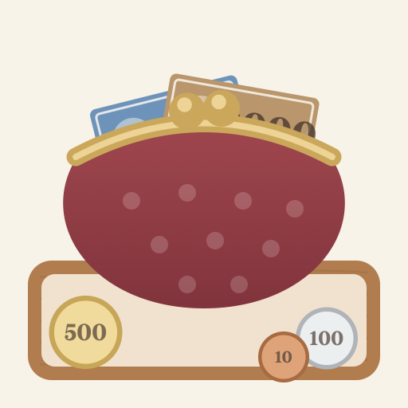

数える財布の家計簿
お札と硬貨を数えれば、打ち忘れても財布と合う。
財布の中のお札と硬貨を、枚数でたたいて数える家計簿です。前に数えた時との差が「この間に出ていったお金」。記録した買い物との差は「記録していない出費」として1行で残ります。
- 数えて合わせる：1万円札 2枚、100円玉 3枚…と、銭皿の上のお札と硬貨の絵をたたいて数えます。前に数えた額＋入れた額－記録した出費（見込み）と、いま数えた額の差が「記録していない出費」です
- 財布の中身を絵で：はじめの画面に、いまの見込みの額と、最後に数えた時のお札と硬貨を絵で並べます
- 思い出したら足せる：「記録していない出費」から、その間の日時で記録すると、差が減ります
- 使った（分け方8つ・カードなど財布の外）、入れた（下ろした・もらった）。金額は「120＋340」のように足し算でも打てます
- 月のまとめ（記録した・記録していない・財布の外、分け方ごと）と1年の表
- 途中に画面いっぱいの広告は出ません（画面のいちばん下の小さな広告だけです）。銀行口座とのつなぎ・登録・課金はありません